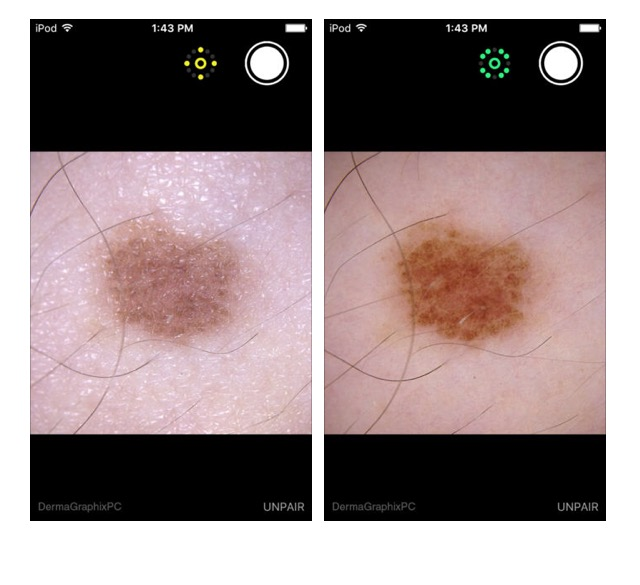

"Лечу по фотографии" - сучасні технології допомагають перевірити родимку на її безпечність
Справедливо відмітити, що ідея не нова, вона раніше вже була втілена стентфортськимидослідниками, а також стала темою грантовогопроекту білоруських колег. Окрім того, на сьогодні вже існує до чотирьох десятків мобільних додатків, які можуть допомогти користувачу спробувати дослідити своб родимку. Українська команда, проаналізувавши досвід попередників, врахувавши всі недоліки та переваги, створила ресурс Nevus, який стане у пригоді не лише для пересічного користувача, а й для медичних співробітників, що працюють в цій сфері.
Основний фокус проекту зосереджений на можливості розрізняти невус (власне родимку), меланому та себорейний кератоз. Для цього просто потрібно сфотографувати та завантажити свою родимку, після чого нейронна мережа із 25 мільйонами параметрів буде порівнювати її із 10 тисячами інших зображень. Як результат буде отримано три числа, які відображають ймовірність того, що на завантаженому фото саме родимка, меланома чи кератоз. На основі величини цього числа робиться припущення про діагноз.
Чи помиляється система? Відповідь - так, як, власне, і лікарі. Ймовірність похибки завжди є, але цікаво відзначити, що специфічність та чутливість створеного методу цілком співрозмірна із тими, яких було досягнуто колегами стенфортського проекту, де кількість зображень в базі була в десять разів більша.
На даний час триває розробка мобільного додатку з одноіменною назвою.
А ми тим часом вже зараз можемо протестувати інші вже існуючі додатки для наших родимок, а вже в зовсім близькому майбутньому користуватися нашим українським сервісом.
